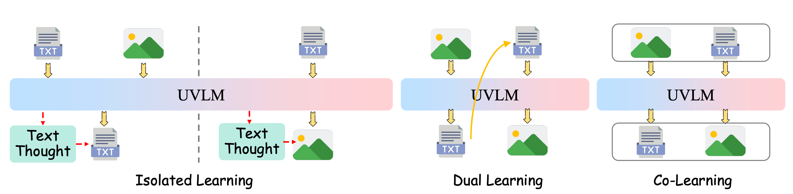
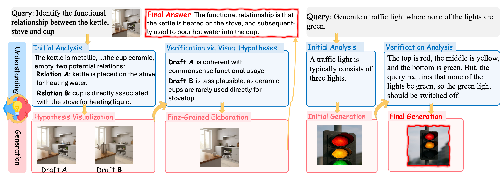

Method
Currently, existing explorations of synergy have predominantly focused on improving architectural design to unify the two abilities, while overlooking a crucial point: during task solving, the understanding and generation modules often lack close and explicit interaction, thereby failing to realize genuine synergy between comprehension and generation.

Figure 1: Comparison of existing mechanisms for synergizing understanding and generation, including isolated learning where the two abilities are trained independently, dual learning which leverages cross-modal reconstruction for mutual supervision, and co-learning which jointly optimizes both tasks with paired samples.
To illustrate this, when a user’s instruction is ambiguous, an understanding module could first propose several plausible candidate solutions for a question, then invoke generation to produce sketches or key visualizations as a means of “verifying” these candidates, ultimately yielding the correct answer. Conversely, once the generation module produces initial results, it could query the understanding module for high-level guidance, such as attributes or reasonable spatial layouts, to progressively refine the output (see Figure 2). This motivates a new perspective: instead of treating understanding and generation as co-existing skills, we argue they should be interleaved in a problem-solving loop.

Figure 2: Overall illustration of the multimodal encoding framework.
Building upon a UVLM, we model the synergetic understanding and generation thinking process as an interleaved analyzing–drafting problem-solving loop. Given an input, the model alternates between analyzing (producing textual thoughts) and drafting (producing visual thoughts) before delivering the final output. To achieve this, we design a two-stage training pipeline: Stage 1 performs supervised training to imitate interleaved thinking, and Stage 2 leverages reinforcement learning to enable the model to adaptively decide when to invoke analysis or drafting.

Figure 3: Illustration of the interleaved analytic–drafting problem-solving loop, where understanding and generation interact synergistically to yield accurate solutions.